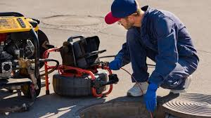
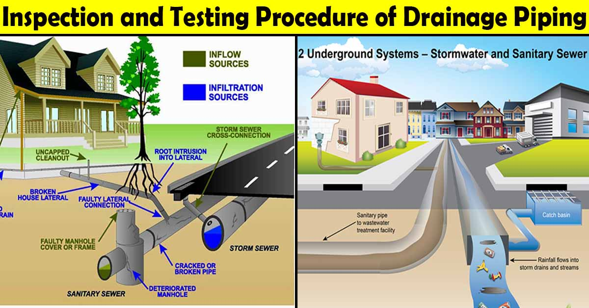
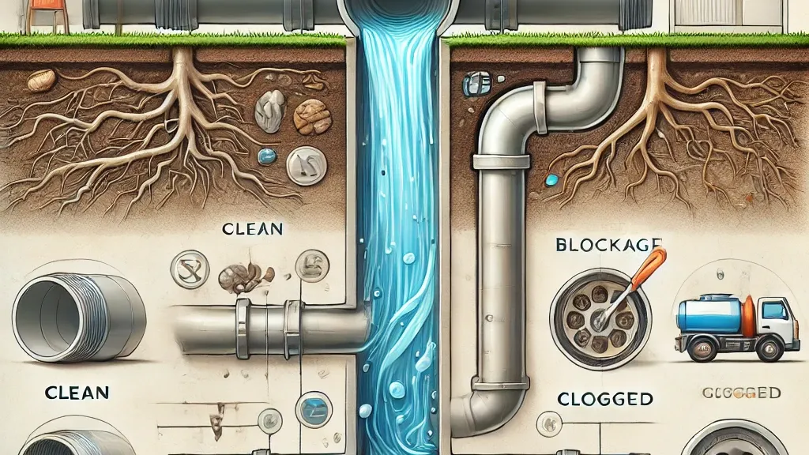
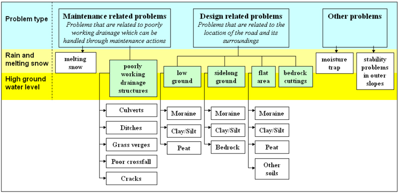
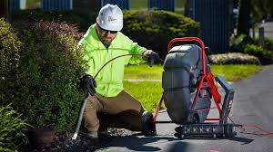

Drainage Inspection
Learn How Drainage Inspections Are Conducted

Overview of Drainage Inspection: Regular drainage inspections help identify blockages, damages, and inefficiencies in drainage systems, ensuring effective water flow and preventing flooding.

Common Inspection Methods:
- Visual Inspections: Checking surface drainage conditions manually.
- CCTV Drain Surveys: Using cameras to inspect underground pipelines.
- Smoke and Dye Testing: Detecting leaks and blockages with colored dyes and smoke.
- Hydrostatic Testing: Checking pipe integrity by filling them with water under pressure.

Benefits of Regular Drainage Inspection:
- Prevents costly repairs and property damage.
- Ensures efficient water flow and reduces flood risks.
- Identifies potential problems before they escalate.
- Improves overall drainage system lifespan.

Challenges in Conducting Drainage Inspections:
- Access Issues: Some underground pipes are difficult to reach.
- Cost Factors: Advanced inspection methods can be expensive.
- Weather Conditions: Inspections can be hindered by extreme weather.
- Specialized Equipment Needs: Requires trained professionals for accurate assessments.

Conclusion: Regular drainage inspections are essential for maintaining efficient drainage systems, preventing potential failures, and ensuring a well-functioning infrastructure.